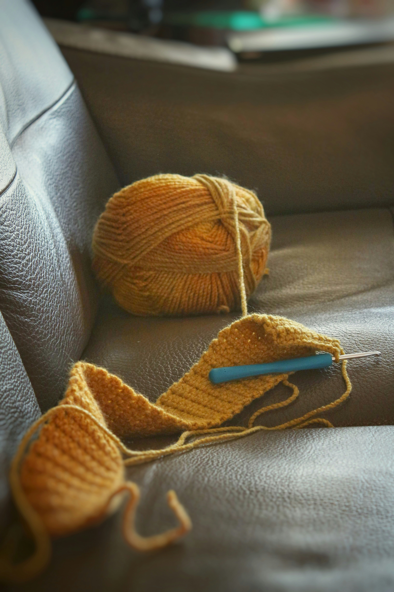

Crafting Projects
Crafting projects are a popular hobby for many people. They are a way people destress and relax. It is a very meditative process but it also requires a lot of planning, which includes creating your own patterns or using published patterns. Here you will find a basic guide for what it means to create a crafting project.
Websites for Planning a Crafting Project
| Website | Description |
|---|---|
| Ravelry: |
Website for planning your knitting projects |
| Milanote: |
Website for planning creative projects visually |
| Notion: |
Website for planning projects in a very customazible way |
Crafting Projects - Categories
Knitting
Crocheting
